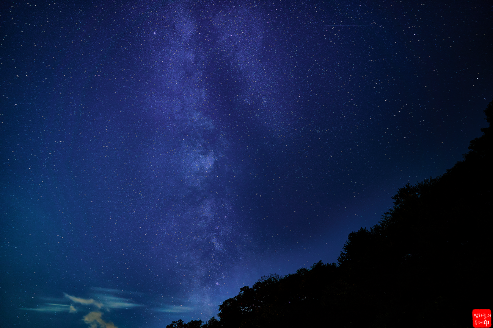
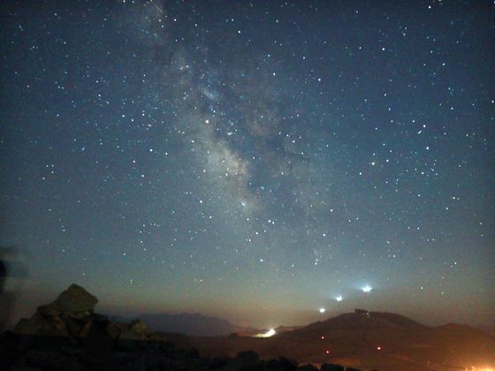
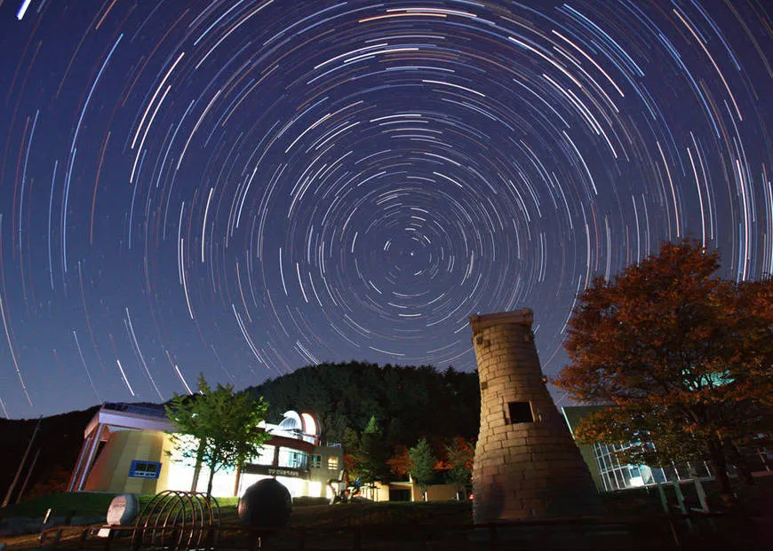
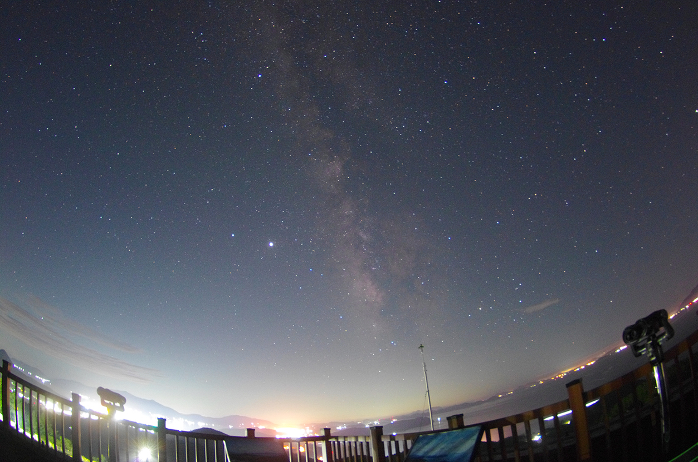

별빛기행 · 밤하늘 안내서
도시의 불빛에서 벗어나 맑은 공기와 깊은 어둠이 찾아오는 곳에서는 눈이 시리도록 가득한 밤하늘의 별들을 만날 수 있습니다. 국내의 대표적인 은하수 및 별 관측 명소들을 소개합니다.
경기 양평군 양동면 금왕리 187
수도권에서 접근성이 가장 좋은 은하수 명소 중 하나입니다. 어두운 터널 프레임 안으로 쏟아지는 밤하늘을 담을 수 있어 사진작가들에게 특히 인기가 높습니다.

강원도 강릉시 왕산면 안반데기1길
해발 1,100m의 고지대에 위치한 국내 최대 규모의 고랭지 채소밭입니다. 사방이 트여 있어 지평선 위로 떠오르는 거대한 은하수와 별무리를 관측하기에 최적의 장소입니다.

경북 영양군 수비면 수하계곡로 125-18
아시아 최초로 '국제밤하늘보호공원'으로 지정된 곳입니다. 인공 조명이 엄격히 제한되어 있어 우리나라에서 가장 어둡고 깨끗한 밤하늘와 수많은 별을 만날 수 있습니다.

전라남도 고흥군 도양읍 장기산선암길 353
우주의 도시 고흥에 위치한 천문대입니다. 아름다운 다도해의 풍경과 함께 최첨단 천체 망원경을 통해 행성, 성단, 성운 등을 직접 관측할 수 있는 교육 명소입니다.
